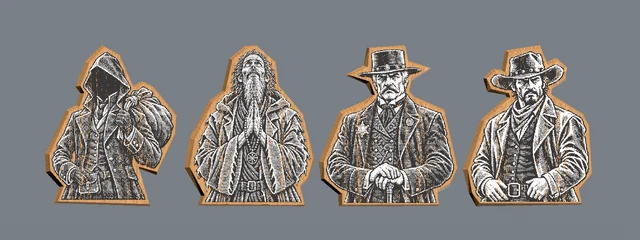
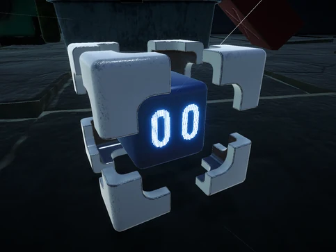
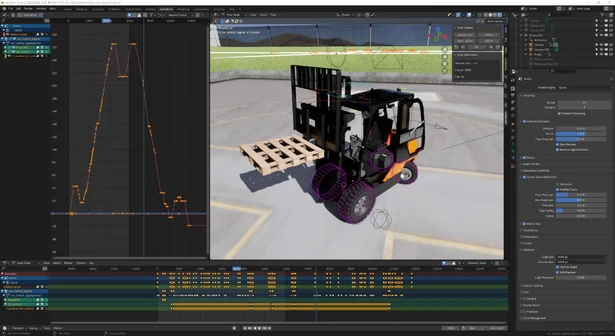

SHADERS / REAL-TIME DIRECTION
Break Shoot
우버 셰이더, 숫자 표시와 스티커 연출.
02 / SHIM YOUNGHWAN
ART × CODE × REAL-TIME
셰이더 · 제작 도구 · 실시간 연출
시각적 표현과, 그 뒤에서 작동하는 기술.
지도 생성, 나무판 캐릭터 제작 도구와 전투 연출. 하나의 게임 안에서 연결되는 기술 작업을 소개합니다.
기술 브레이크다운SELECTED EXPLORATIONS
프로젝트 · 제작 과정 · 작업 기록
SHADERS / REAL-TIME DIRECTION
우버 셰이더, 숫자 표시와 스티커 연출.

TOOLS / PROCEDURAL WORLDS
지도 생성과 스프라이트 기반 메시 도구.

INTERNSHIP / IN THE JUNGLE DLC
곤충 애니메이션과 던전 그래픽 작업.

SHADERS / RIGGING
굴절, 픽셀 얼굴과 기계팔 관절 제어.

STUDIES / MECHANICAL MOTION
기계 구조의 움직임과 프로시저럴 재질.
BEHIND THE WORK
심영환 / Shim YoungHwan
시각적인 표현을 구현하고, 반복되는 제작 과정을 도구로 연결하는 테크니컬 아티스트 심영환입니다.
GET IN TOUCH